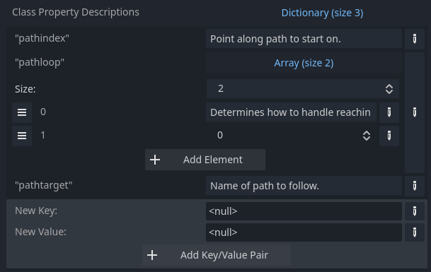
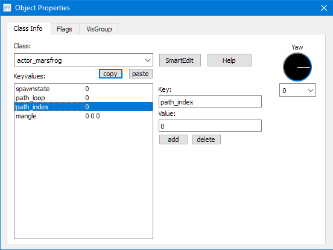
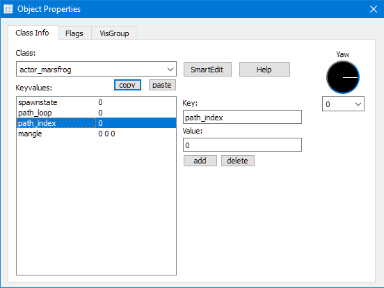
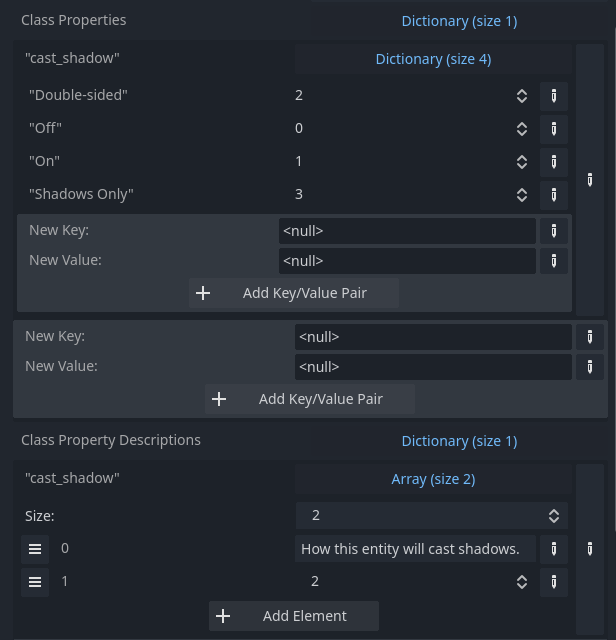
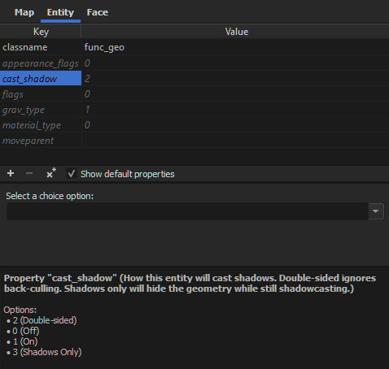
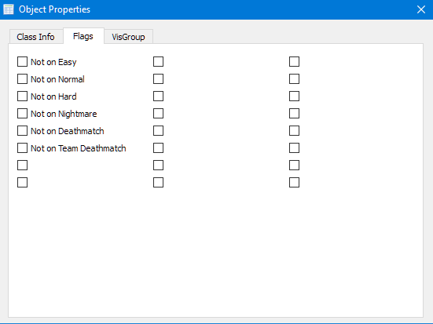
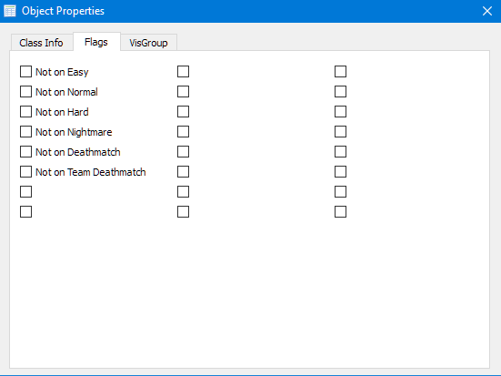

Entity Key Value Pairs
Key Value Pairs are the most powerful aspect of FuncGodot. All of the Class Properties set in a FuncGodotFGDEntity definition get added to the corresponding entity placed in the map editor.
Key Value Pairs are defined in a FuncGodotFGDEntityClass resource's Class Properties dictionary. A Class Property is defined with a key String and a value of many of the Godot Variant Types (see Property Types below for a full list). The value set becomes both the default value and the Variant type the FuncGodotMap applies to that property on map build.

Additionally, you can define a property description. With the exception of Choices and Bit Flags, property descriptions are created by matching a key from Class Properties to the Class Property Descriptions dictionary and setting a String value for the description.

The result as it appears in TrenchBroom:

If you plan on using J.A.C.K. you may want to use the descriptions as proper names for the keys rather than actual descriptions. The same entity's properties as they appear in J.A.C.K.:
 

Once the corresponding node is generated by a FuncGodotMap, these key value pairs are then applied to the generated node's func_godot_properties dictionary. Additionally, if you add undefined key value pairs in your map editor, these too will be added to your node's func_godot_properties dictionary.
NOTE: Entity keys that are not given values will have their default values applied to the generated node's func_godot_properties dictionary.
Applying Key Values
It's pretty easy to apply entity key value pairs to nodes generated by FuncGodot. You have one property and two methods that you can use:
the Dictionary func_godot_properties,
the method _func_godot_apply_properties(entity_properties: Dictionary),
and the deferred method _func_godot_build_complete().
After the entity is built, FuncGodot will check if the entity contains a func_godot_properties Dictionary, and if it exists it will apply the translated key value pairs as
a Dictionary to this variable. In order for the application to persist at Runtime or after closing your scene, you'll need to make sure the variable is an @export variable.
Use _func_godot_apply_properties to apply your key value pairs to your node, as they are passed through the _func_godot_properties argument in the function.
_func_godot_build_complete is a deferred call that happens after every entity has called _func_godot_apply_properties, making it safe to reference
any nodes generated during _func_godot_apply_properties.

You are allowed to limit yourself to only the application methods you're interested in. Mix and match these options as you see fit for your entities.
Property Types
FuncGodot supports many of the Godot Variant types. Consult the key values section of the FGD page on the Valve Developer Wiki for more information on FGD value types.
| Godot Variant Type | FGD Value Type | Notes |
| Int | integer | |
| Float | float | |
| String | string | |
| Bool | choices | Automatically sets up options "No" and "Yes" with values "0" and "1" respectively. |
| Vector2 | string | Vector2 key values are represented as string "X Y". Can accept floating point values. |
| Vector2i | string | Vector2i key values are represented as string "X Y". Can only accept integer values. |
| Vector3 | string | Vector3 key values are represented as string "X Y Z". Can accept floating point values. |
| Vector3i | string | Vector3i key values are represented as string "X Y Z". Can only accept integer values. |
| Vector4 | string | Vector4 key values are represented as string "W X Y Z". Can accept floating point values. |
| Vector4i | string | Vector4i key values are represented as string "W X Y Z". Can only accept integer values. |
| Color | color255 |
Color key values are represented as "R G B", with each value being from 0 to 255. Some map editors may offer a color picker. Alpha is always set to 1.0. If alpha requires specification, use an additional float property. |
| Dictionary | choices |
Returns an Int or
String on map build. Dictionaries are a special property case. See the Choices section for more information. |
| Array | flags |
Returns an Int on map build to be used as a bit mask. Somewhat complicated to set up and only flexibly supported in TrenchBroom. See the Bit Flags section for more information. |
| NodePath | target_destination | NodePath is intended as a targeting property type in map editors, similar to Quake's "target" property. Some map editors may have additional editor display options showing links between entities. Not utilized in every map editor. Returns a String on map build. |
| Material | material / shader | Material is intended as a texture path property type in map editors. Some map editors may offer a texture picker. J.A.C.K. utilizes the shader key word (make sure to set your FuncGodotFGDFile's target_map_editor property to JACK). Returns a String on map build, using the assigned default Material's resource path as the property's value. |
| Texture2D | decal | Texture2D is intended as a decal texture path property type in map editors. Some map editors may offer a texture picker, typically filtered to only access a decals.wad. In the map editor, the texture at the specified path will behave in a similar way to Godot's Decal node. Returns a String on map build, using the assigned default Texture2D's resource path as the property's value. |
| AudioStream | sound | AudioStream is intended as an audio file path property type in map editors. Some map editors may offer a sound picker. Returns a String on map build, using the assigned default AudioStream's resource path as the property's value. |
| Object | target_source | Object is intended as a target name property type in map editors, similar to Quake's "targetname" property. Some map editors may have additional editor display options showing links between entities. Not utilized in every map editor. Returns a String on map build. |
Choices
The choices key value type allows you to open a dropdown menu of predefined options in your map editor. They are defined in Godot by choosing a value type of dictionary, with each key being the option text and each value being the property value. Keys are always Strings, but values can be either Int or String.

Normally the default value is set in Class Properties, but for Choices we can't do this (not without a fair amount of trouble). Instead we use Class Property Descriptions to set a default value. We do this by creating an Array with 2 elements: the first element is a String serving as the description; the second element is the default choice and should be either an Int or String matching one of the option values defined in Class Properties.
Once written to the FGD you should get a something like this in your map editor:

NOTE: While Bool types always generate a choices key value type, you don't need to set them up any differently than any other property. FuncGodot will automatically format Bool types for you on FGD export.
Bit Flags
Bit flags are the most complex key value type to set up, but offer a lot in simplifying complex comparisons and systems in your game scripts.
To set up a bit flags property, choose Array as the value's Variant type. Each element of the Array will be an Array as well, representing a single Flag. Each Flag Array is composed of 3 elements: a String serving as the Flag Description, an Int declaring the Flag's Bit Value, and an Int representing the Flag's default state.
Bit Flag properties do not utilize descriptions so there is no need to add one to the entity's Class Property Descriptions dictionary.

Once exported, you should get something like this:
 

Left, Trenchbroom; Right, J.A.C.K.; Not shown: NetRadiant Custom because I'm lazy, but it's pretty similar to J.A.C.K. in this regard.
Even though Godot uses 64 bit signed integers, map editors only seem to offer support for up to 24 bit flags. This is largely an artifact of the Quake engine, specifically its Quake C programming language. QuakeC doesn't have an integer type and instead used a 32 bit floating point number. The result was that only 24 bits remained to be used in bitwise operations. The Half-Life engine inherited this limitation, and subsequent Quake and Valve map editors designed their bit flag menus with this limitation in mind.
In TrenchBroom this isn't too much of a problem as you can have multiple bit flag key value pairs. Unfortunately other map editors are designed to only support one group of flags that they assume to be spawnflags, no matter what they're called in the FGD. J.A.C.K. will just overwrite spawnflags. NetRadiant Custom will throw errors if it detects flag values with matching bits and be unable to open. All key value types of flags will be compiled into the entity's Flags property and saved in the map file with the key "spawnflags".
If you're using another map editor other than TrenchBroom, you can still use multiple flags key value pairs or inherit them across multiple Base Classes. Just make sure each flags property applied to an entity has a unique bit value and expect FuncGodot to build it as a compiled spawnflags bitmask.